library(factoextra)
library(pheatmap)
library(tidyverse)
library(directlabels)
library(GGally)
theme_set(theme_bw())We usually think of high-dimensional data as consisting of multiple measures on a group of samples:
Many scientists traditionally think of high-dimensional data as having parallel, continuous measures:
These may be complemented by a smaller number of “metadata” variables, which may be more diverse in type (count, categorical, etc.):
More and more datasets don’t follow this:
We study the rows (samples) using the columns (measures)
But we can also do the opposite!
print(names(decathlon2)) ## from factoextra pkg
## [1] "X100m" "Long.jump" "Shot.put" "High.jump" "X400m"
## [6] "X110m.hurdle" "Discus" "Pole.vault" "Javeline" "X1500m"
## [11] "Rank" "Points" "Competition"dec_frame <- (decathlon2[1:10]
%>% as_tibble()
%>% rename_all(sub, pattern="^X", replacement="Run_")
%>% mutate_at(vars(contains('Run_')), ~(-1*.))
%>% rename_all(sub, pattern="110m.", replacement="")
%>% mutate_all(~c(drop(scale(.))))
)
Iris pairs plot (iris.R)
dec_mat <- as.matrix(dec_frame)
heatmap(dec_mat)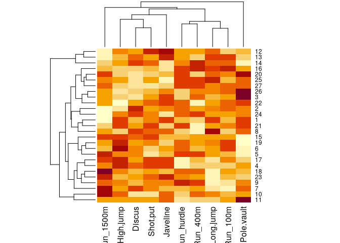
heatmap(t(dec_mat))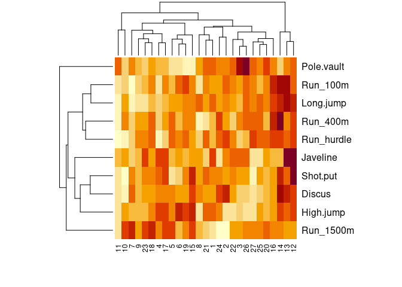
pheatmap(cor(dec_mat), cell.width = 10, cell.height = 10)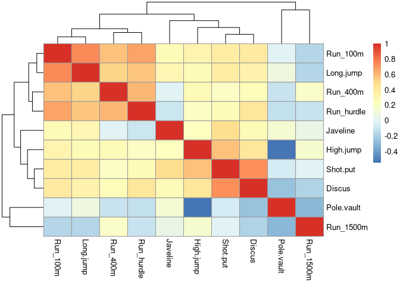
Better for visualizing groups of events
pheatmap(cor(t(dec_mat)), cell.width = 4, cell.height = 4)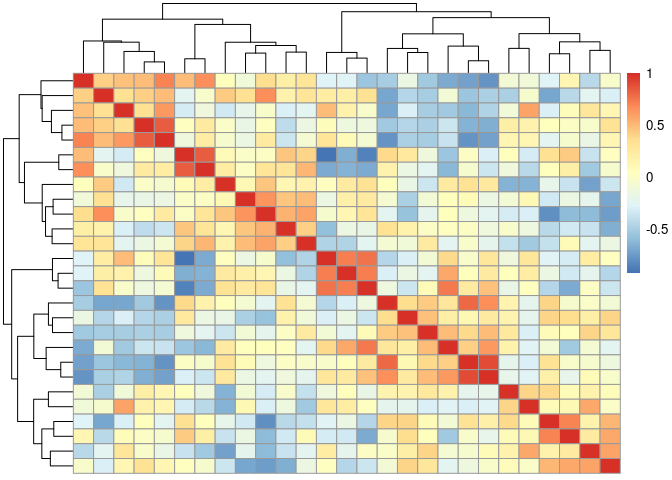
Better for visualizing groups of events
A beautiful decomposition based on the idea that data points are points in a Euclidean space
We can think about the PCA as a decomposition (making observed points from idealized points)
Or we can think about it as minimizing distances:
pca_ath <- prcomp(dec_mat, scale=TRUE)
fviz_screeplot(pca_ath)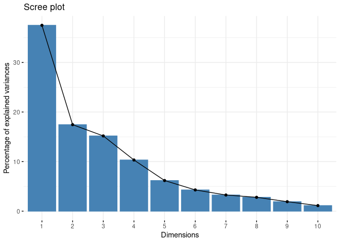
fviz_pca_ind(pca_ath)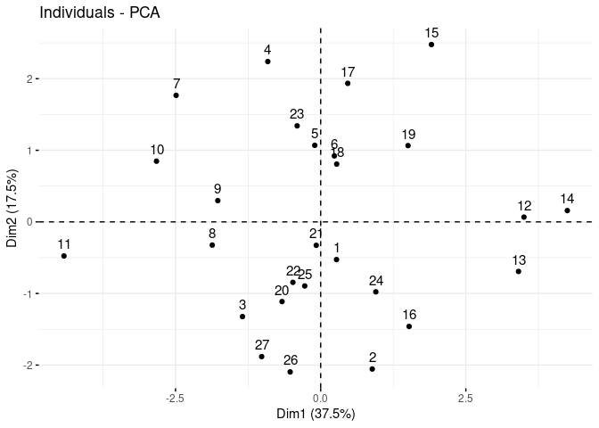
fviz_pca_var(pca_ath)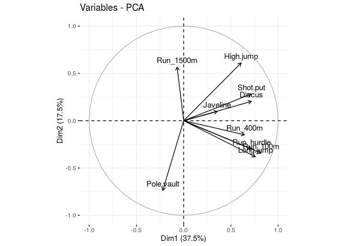
fviz_pca_var(pca_ath, axes=c(2, 3))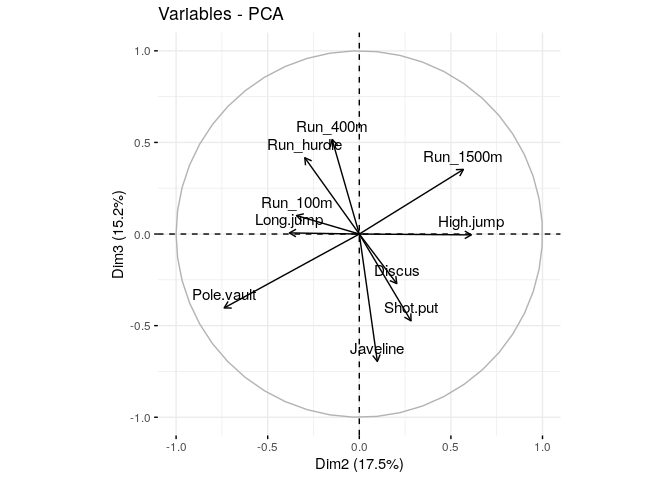
View scores and components:
fviz_pca_biplot(pca_ath)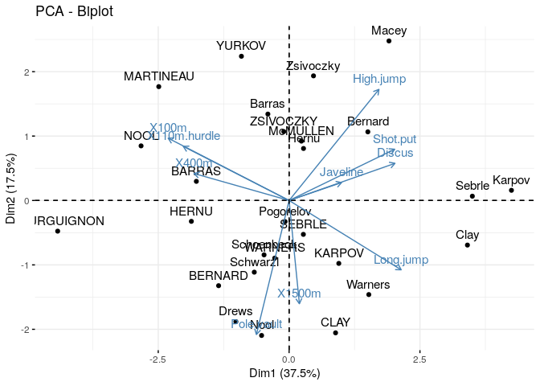
load <- with(pca_ath,
sweep(rotation, MARGIN=2, FUN="*", sdev)
)
pheatmap(load, cluster_cols=FALSE)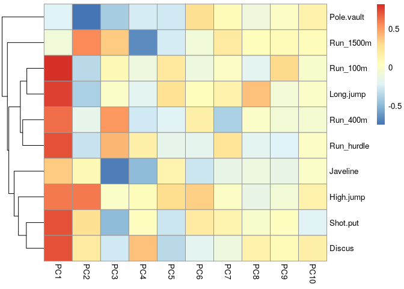
library(vegan)
## Loading required package: permute
## Loading required package: lattice
## This is vegan 2.5-7
mds <- metaMDS(dec_mat, distance="euclidean")
## 'comm' has negative data: 'autotransform', 'noshare' and 'wascores' set to FALSE
## Run 0 stress 0.175356
## Run 1 stress 0.2014753
## Run 2 stress 0.2083051
## Run 3 stress 0.1754592
## ... Procrustes: rmse 0.02207004 max resid 0.07929329
## Run 4 stress 0.1754591
## ... Procrustes: rmse 0.02206809 max resid 0.07929053
## Run 5 stress 0.1754592
## ... Procrustes: rmse 0.02196706 max resid 0.07915474
## Run 6 stress 0.1975348
## Run 7 stress 0.1754591
## ... Procrustes: rmse 0.02205555 max resid 0.07927529
## Run 8 stress 0.2028351
## Run 9 stress 0.2045482
## Run 10 stress 0.2054213
## Run 11 stress 0.1783895
## Run 12 stress 0.1754591
## ... Procrustes: rmse 0.02200978 max resid 0.07920728
## Run 13 stress 0.2035115
## Run 14 stress 0.2051199
## Run 15 stress 0.2008641
## Run 16 stress 0.292946
## Run 17 stress 0.1754591
## ... Procrustes: rmse 0.02204496 max resid 0.07926004
## Run 18 stress 0.1754593
## ... Procrustes: rmse 0.02215744 max resid 0.07942708
## Run 19 stress 0.1788117
## Run 20 stress 0.2027162
## Run 21 stress 0.1754592
## ... Procrustes: rmse 0.02208585 max resid 0.07931308
## Run 22 stress 0.1783895
## Run 23 stress 0.2035114
## Run 24 stress 0.2008093
## *** No convergence -- monoMDS stopping criteria:
## 24: stress ratio > sratmaxplot(mds)
## species scores not available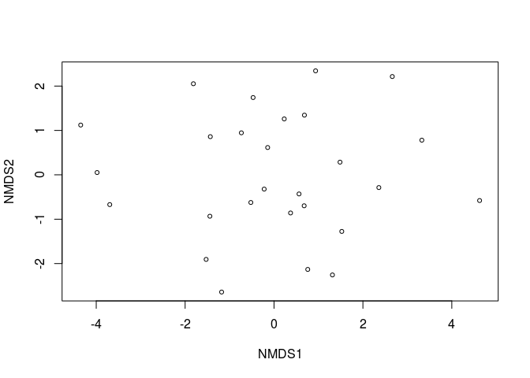
The biplot is hard (but we can help you if you want to do it)
GGally::ggparcoord(dec_frame)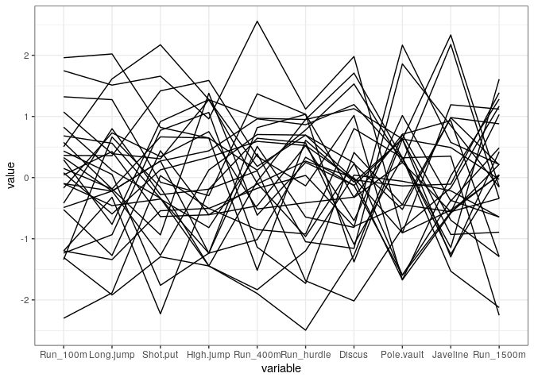
ath_frame <- (
as.data.frame(t(as.matrix(dec_frame)))
%>% mutate(event=names(dec_frame))
)ggparcoord(ath_frame)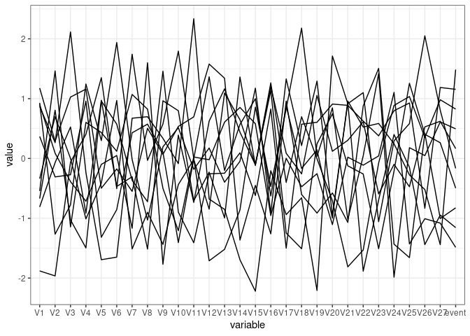
ggparcoord(ath_frame, groupColumn="event")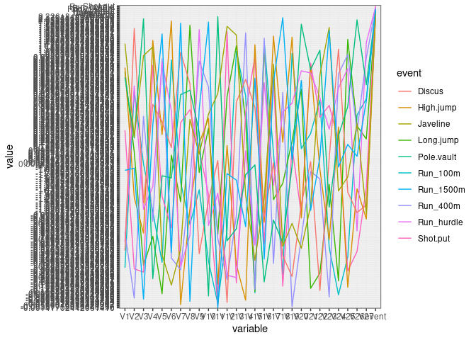
library(andrews)
## andrews::numarray() **does not like tibbles**
andrews(as.data.frame(dec_frame))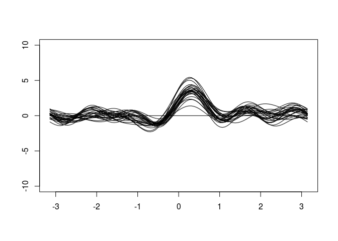 ## dual Andrews plot
andrews(ath_frame)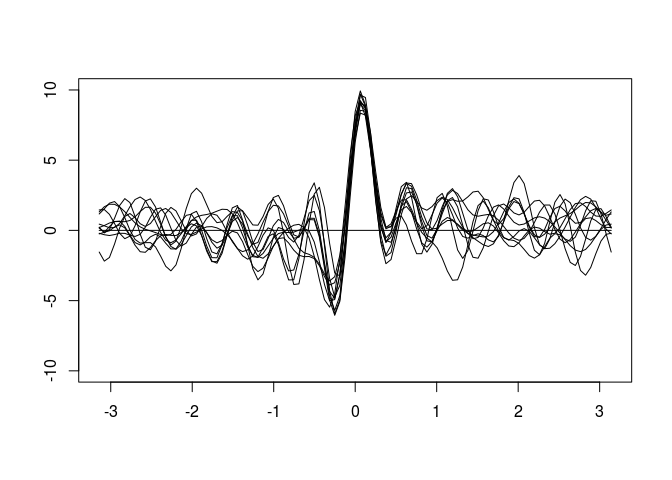
Not implemented; may suffer similar problems
Many of these charts might work if the variables were in a suitable order:
heatmap provides an order
other ordering methods take a more holistic view
PCA and other decompositions could also provide an order!
andrews(load)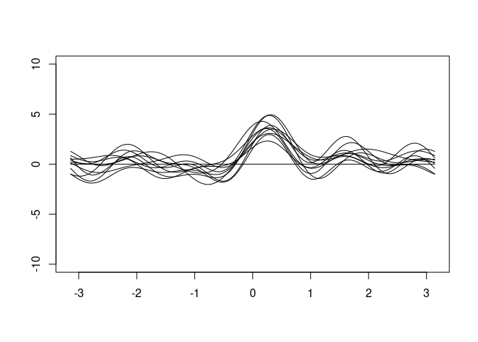
ggparcoord(load)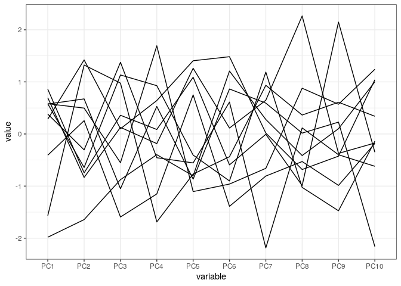